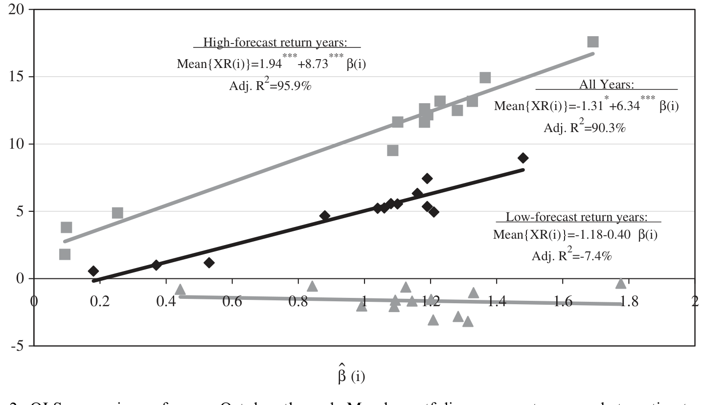
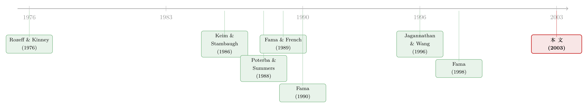

一年的钱，为什么只在冬天才赚？
本文读的是 Ogden (2003, Journal of Financial Economics)：用 1947–2000 年的美国数据，作者发现 NYSE 股票一整年的超额收益里有 78%–107% 集中在 10 月到次年 3 月这半年；这半年既是经济不确定性集中"结算"的时段，也是股票收益最高、风险最高、宏观可预测性最强的时段——三件事在日历上严丝合缝地对齐，背后是一条"年度周期"的暗线。
1 引言：把一年的收益摊在日历上
先做一个看似无聊的练习：把美国股市一整年的超额收益，按月份拆开摊在桌面上。
你大概会预期它是均匀的——毕竟有效市场假说告诉我们，收益是对风险的补偿，而风险没理由偏爱某个月份。可数据给出的画面完全不是这样。Ogden 用 1947–2000 年的 NYSE 数据算了一笔账：10 月到次年 3 月这半年贡献了各股票组合年度平均超额收益的 78%–107%。换句话说，剩下的 4 月到 9 月那半年，几乎是白干的——市场组合在这半年的累计超额收益接近于零，甚至为负。
一个自然的反应是：这不就是 一月效应（January effect） 吗？小盘股在一月暴涨，早被 Rozeff 和 Kinney (1976) 发现了。但作者很快堵死了这条退路。看 Table 3：NYSE 最大的两个规模十分位（decile 9、10）和市值加权的市场组合，一月的平均超额收益排在十二月和十一月之后，只能屈居第三；市场组合一月只有 1.26%（*），而十二月是 1.72%（***）、十一月是 1.41%（**）。一月效应是真的，但它只是大象身上的一根毛——真正的故事是整个 10 月–3 月这半年的系统性抬升，而且股票和债券都有。
接着，一个更尖锐的问题浮出来：如果这不是一月效应，那它是什么？是市场的非理性日历癖好，还是风险与预期收益本身就有季节性？这正是这篇论文要一路追问到底的那个核心。
2 第一块拼图：经济活动的"年度周期"
要回答上面的问题，作者没有从收益入手，而是先去看实体经济。这是全文最聪明的一步：他把宏观季节性当作收益季节性的"地基"。
看 Table 1（季节调整前的数据）。真实 GDP 的季度增长率有着极强的季节性：以 6 月、12 月为高点（4.2%、4.4%），9 月较低但为正（1.3%），而以 3 月结尾的那个季度则是剧烈的负增长（−6.5%），均值差异的 f 值高达 451.2（***）。当然，GDP 有季节性是常识——这正是人们要做季节调整的理由。但作者要你注意的是季节性的内部结构：
- 投资（无论是非住宅还是住宅的私人国内总投资 GPDI）和工业生产在年中见顶——住宅投资 6 月季度高达
25.1%，非住宅8.5%； - 而占 GDP
64%的个人消费支出，要到第四季度才见顶（7.1%）。
这个错位很关键。它意味着：一个年度里"能产出多少"在 9 月底大体就定了型，但"实际卖掉了多少、企业到底赚没赚到钱"——这个最终的不确定性，要等到第四季度消费实现、甚至要等到次年一季度把全年的账（以及各家公司的账）算清楚，才真正落定。
这就是"年度周期"假说的内核：潜在产出在年中确定，但结果的不确定性在 10 月–3 月才被解决。 风险条件因此天然带着日历的节拍。
3 第二块拼图：股市的"预言能力"也分季节
有了实体经济这块地基，作者抛出第二个问题：既然股价是对未来现金流的折现，那滞后的股票收益应该能预测未来的经济活动（这是 Fama (1990) 的经典逻辑）。问题是——这种预测能力，会不会也有季节性？
他先复刻 Fama 的回归：把工业生产的月度变化对过去 1 到 12 个月的市场超额收益回归。全样本结果和 Fama 几乎一样：所有滞后项系数为正、大多显著，调整后 R² = 10.8%。看上去平平无奇。
但真正关键的一步，是把这个回归按季度拆开重做。结果（Table 2 Panel B）出现了戏剧性的分裂：
| 季度 | GDP 回归的调整 R² |
|---|---|
| 6 月 | −0.5% |
| 9 月 | 13.1% |
| 12 月 | 22.2% |
| 3 月 | 49.0% |
也就是说，市场对经济的"预言能力"几乎全部集中在 12 月和 3 月这两个季度，而在 6 月、9 月几乎是瞎子。工业生产、非住宅投资的回归都是同一个模式。把这块拼图和上一节并排放：经济不确定性在 10 月–3 月被解决，而市场恰恰在这同一段时间里"看得最清"。两件事在日历上对齐了。
4 反转：高收益从哪儿来——不是"涨上去"，是"跌回来"
到这里，故事已经很顺了：10 月–3 月不确定性集中释放 → 风险高 → 预期收益高 → 实现的超额收益高。但作者没有就此打住，他追问了一个更本质的问题：这半年的高收益，机制到底是什么？
逻辑上有两种可能：(1) 低收益期（4–9 月）的亏损，在随后的高收益期被反转收回；或者 (2) 高收益期的盈利，在随后的低收益期被反转吐出。这两种"反转"会留下不同的统计指纹，而捕捉它们的工具，是 方差比（variance ratio, VR）。
方差比的思路来自 Lo 和 MacKinlay (1988)：如果收益服从随机游走，那么长期收益的方差应该等于短期收益方差按时间的简单加总，比值为 1；若存在均值回归（反转），长期方差会被压低，比值小于 1。用作者的设定，对每个"焦点月"，计算以它结尾的年度超额收益方差，对其构成的两段六个月超额收益方差之比：
$$ VR=\frac{\operatorname{Var}(r_{12})}{2\,\operatorname{Var}(r_{6})} $$
其中 \(r_{12}\) 是年度超额收益、\(r_{6}\) 是六个月超额收益；随机游走的零假设是 \(VR=1\)。
结果是：长期方差比系统性地偏离 1.0，而且偏离的方向和大小，恰好能被一种非对称的季节反转（seasonal asymmetric return reversal） 解释——4 月到 9 月的亏损，在随后的 10 月到 3 月被反转收回。注意"非对称"这个词：反转只发生在一个方向、一个季节，而不是对称地两头都有。这就是为什么长期收益看起来比随机游走"更平稳"（方差比小于 1），也正是 Poterba & Summers (1988)、Fama & French (1988) 当年争论的长期均值回归之谜——只不过 Ogden 把这个谜安放进了日历的格子里。
反转的方向很重要。如果是"高收益期的盈利被吐回"，那 10 月–3 月的高收益就成了将被抹平的幻觉；但数据说的是相反方向——是先跌后涨。所以这半年的超额收益是"真金"，是对前半年风险的迟来补偿，而非即将反转的泡沫。
5 把三块拼图钉在一起：从宏观到预期收益
接着是把因果链条收紧的一步。作者发现：4 月到 9 月的市场亏损，与随后 10 月到 3 月的市场收益，都与 10 月–3 月的宏观变化相关——但符号相反。
这个"符号相反"是点睛之笔。它的含义是：在 4 月到 9 月期间，市场就已经在为 10 月–3 月的经济前景形成新的预测，并把预测打进了价格。坏的宏观前景压低了 4–9 月的价格（亏损），同时抬高了 10 月–3 月的预期收益（补偿更高的风险）。更进一步，当 10 月–3 月的预期收益更高时，GDP 的平均增速更低、而 GDP 和股票收益的波动率都更高——预期收益、低增长、高波动，三者绑在一起，完全符合理性时变风险溢价的图景（Merton (1973) 一脉的直觉）。
最后，作者用五个滞后变量（短期 T-bill 利率、期限利差、信用利差等，沿用 Keim & Stambaugh (1986)、Campbell (1987)、Fama & French (1989) 的预测工具）去预测股票和债券组合的六个月收益，发现它们的预测力同样有季节性，且在 10 月–3 月最强。这种条件预测力，让他得以做一个真正的资产定价检验：把组合的 10 月–3 月平均超额收益对 beta 估计做横截面回归。如图 2 所示，高 beta 的组合对应着更高的 10 月–3 月平均收益——预期收益既在横截面上随 beta 变化，又在时间序列上随季节变化。

Figure 2: OLS regressions of mean October through March portfolio excess returns on beta estimates
这恰好呼应了 Harvey (1989)、Jagannathan & Wang (1996)、Ferson & Harvey (1999) 那条"条件 CAPM"的路线：静态 CAPM 失灵，往往是因为 beta 和风险溢价本身在动；而 Ogden 给出的，是一个由日历驱动的、最朴素也最可观测的"条件变量"。（关于"beta 只在特定时点才值钱"这件事，可参见《一年只有那么几天，beta 才真正值钱》；关于股票收益的季节性与情绪节律，可参见《股市的"四季"，藏在一条叫情绪 beta 的曲线里》。）
6 文献脉络
把这篇论文放回它生长的土壤里，能更清楚地看到它在缝合三条原本各走各路的线索。
第一条线是"日历异象"。Rozeff & Kinney (1976) 最早发现资本市场的季节性，Keim (1983) 把它和规模异象绑在一起，Ogden (1990) 自己也研究过月末与一月效应的共同解释。这条线一直被当作"行为/微观结构的零碎现象"。
第二条线是长期均值回归。Poterba & Summers (1988)、Fama & French (1988) 发现长期指数收益存在反转，但 Lamoureux & Zhou (1996) 用修正统计量后又无法拒绝随机游走——这是一桩悬案。
第三条线是"收益—宏观"与可预测性。Fama (1981, 1990)、Fama & French (1989)、Keim & Stambaugh (1986)、Campbell (1987) 论证了股票收益与商业周期、利率、信用利差的联系；Harvey (1989)、Jagannathan & Wang (1996)、Ferson & Harvey (1999) 则把时变预期收益正式写进了资产定价检验。

Ogden (2003) 的贡献，是指出这三条线其实是同一头大象的三条腿：日历异象不是孤立的微观噪声，长期均值回归不是统计幻觉，宏观可预测性也不是全年均匀的——它们都被同一条"年度经济周期"串了起来。最后他还把这套证据拉进了 Fama (1998) 所代表的"有效市场 vs 行为金融"之争：时变风险溢价（理性）和投资者的非理性反应（行为，如 Barberis, Shleifer & Vishny (1998)、Daniel, Hirshleifer & Subrahmanyam (1998)）都能讲一部分，但季节性给出了一个偏向理性、且可被宏观锚定的解释。
7 评论与延伸（Q&A + 研究方向）
(a) 几个可能的疑问
Q：这不就是一月效应换了个说法吗？
不是。一月效应主要在小盘股、且集中在一月一个月；而本文的 10 月–3 月效应在大盘股、市场组合、甚至债券组合上都存在。Table 3 显示，对最大的规模十分位和市场组合，十二月和十一月的均值都高于一月。剔除一月后，多数股票组合的月度均值差异 f 值仍至少边际显著。所以一月效应只是这个更大季节模式中的一个特例。
Q：1947–2000 半个世纪只有 53 个年度观测，会不会就是数据挖掘（data mining）挖出来的？
这是最该警惕的地方，作者也心知肚明。他的防御有三层：子样本里结果稳健；德、日、英等其他国家的股票组合（1973–2000）也呈现类似模式；而且收益季节性与独立测得的宏观季节性、预测力季节性在日历上对齐——三套证据指向同一时段，比单看收益更难用偶然解释。但坦率说，年度频率的样本量始终是这类研究的硬约束。
Q："非对称反转"和普通的长期均值回归差在哪？
普通均值回归是无方向、无时点的——任何时候的偏离都倾向于被拉回。本文的反转是有季节、有方向的：只有 4–9 月的亏损会在随后的 10 月–3 月被收回，反过来不成立。正是这种非对称性，既解释了方差比为何系统性地低于 1，又解释了为何 Lamoureux & Zhou (1996) 用对称设定的检验会"测不出"反转。
Q：高收益对应高风险，可这算"风险补偿"还是"市场算错了"？
本文偏向风险补偿解释：10 月–3 月预期收益高的同时，GDP 增速更低、GDP 与股票的波动率都更高，符合理性时变风险溢价。但它无法完全排除行为解释（比如投资者对年末不确定性的系统性误判）。作者自己把这归入 Fama (1998) 那场未结的争论，没有强行下定论。
Q：债券也有这个季节性，意味着什么？
意味着它不太可能是纯粹的股票特异现象（比如税收亏损抛售只影响个股）。股债同向的季节性，更像是一个共同的、宏观驱动的折现率/风险溢价因素在起作用——这与"股债流动性、风险共同来源"那条文献是相通的。
Q：这对今天的量化策略还有用吗？
要非常小心。一个被广泛记录、又如此简单（"持有冬半年"）的规律，极易被套利吃掉或本就是样本期产物。本文真正的价值不在"择时信号"，而在它把日历季节性提升为一个可观测的条件变量，用于理解预期收益为何、何时变化。
(b) 几个可能的研究问题与提案
1. 公司债的"冬半年溢价"还在吗？
【经济故事】本文债券证据来自较粗的国债/公司债组合，且止于 2000 年。如果 10 月–3 月反映的是宏观不确定性的集中释放，那么对信用利差最敏感的高收益公司债，理应有最强的季节性风险溢价——因为违约风险的"年度结算"对低评级债券冲击最大。 【可行性】高。用 TRACE 成交数据 + ICE/Lehman 公司债指数，按评级分组做月度超额收益与方差比检验，识别上直接复用本文框架。难点是 TRACE 仅自 2002 年起，需与早期指数拼接。
2. 外资持有人会不会"熨平"或"放大"这个季节性？
【经济故事】本文的年度周期建立在美国经济日历上。若一国股市的边际定价者是外国投资者，其消费/财政年度与本地不同步，季节性风险溢价的节拍可能被打乱或叠加。这能为"谁是边际投资者"提供一个新的识别角度。 【可行性】中。需要跨国持有人层面数据（如 TIC、各国央行的外资持股统计）配合月度收益。识别策略：以"可投资度/外资准入放开"作为外生冲击，看季节性强度是否随外资份额变化。数据拼接和频率匹配是主要障碍。
3. 季节性流动性能否解释一部分"冬半年溢价"？
【经济故事】若 10 月–3 月同时是市场流动性更紧、做市能力更弱的时段，那部分"风险溢价"可能其实是流动性溢价。区分这两者，对理解机制至关重要。 【可行性】高。用 Amihud 非流动性、买卖价差等月度指标，检验季节性收益在控制流动性因子后是否衰减。识别清晰，数据可得；难点是流动性与风险溢价高度共线，需要工具变量或事件来切开。
4. 把"年度周期"嵌入条件资产定价模型做严格检验。
【经济故事】本文的资产定价检验（图 2）相对简约。一个自然的延伸是把"距离年度不确定性结算的时间"作为显式条件变量，放进 Jagannathan & Wang (1996) 式的条件 CAPM，看它能否在因子动物园之外提供增量解释力。 【可行性】中。方法成熟、数据可得，但要诚实面对：年度频率 + 单一日历变量，统计功效有限，容易被批评为"又一个被发现就消失的异象"。
参考文献
- Barberis, N., Shleifer, A., Vishny, R. (1998). A model of investor sentiment. Journal of Financial Economics 49, 307–344.
- Campbell, J.Y. (1987). Stock returns and the term structure. Journal of Financial Economics 18, 373–399.
- Daniel, K., Hirshleifer, D., Subrahmanyam, A. (1998). Investor psychology and security market under- and overreactions. Journal of Finance 53, 1839–1885.
- Fama, E.F. (1981). Stock returns, real activity, inflation, and money. American Economic Review 71, 545–565.
- Fama, E.F. (1990). Stock returns, expected returns, and real activity. Journal of Finance 45, 1089–1108.
- Fama, E.F. (1998). Market efficiency, long-term returns, and behavioral finance. Journal of Financial Economics 49, 283–306.
- Fama, E.F., French, K.R. (1988). Permanent and temporary components of stock prices. Journal of Political Economy 96, 246–273.
- Fama, E.F., French, K.R. (1989). Business conditions and the expected returns on bonds and stocks. Journal of Financial Economics 25, 23–49.
- Ferson, W.E., Harvey, C.R. (1999). Conditioning variables and the cross-section of stock returns. Journal of Finance 54, 1325–1360.
- Harvey, C.R. (1989). Time-varying conditional covariances in tests of asset pricing models. Journal of Financial Economics 24, 289–317.
- Jagannathan, R., Wang, Z. (1996). The conditional CAPM and the cross-section of expected returns. Journal of Finance 51, 3–53.
- Keim, D.B. (1983). Size-related anomalies and stock return seasonality. Journal of Financial Economics 12, 13–32.
- Keim, D.B., Stambaugh, R.F. (1986). Predicting returns in the stock and bond markets. Journal of Financial Economics 17, 357–390.
- Lamoureux, C.G., Zhou, G. (1996). Temporary components of stock returns: what do the data tell us? Review of Financial Studies 9, 1033–1059.
- Lo, A.W., MacKinlay, A.C. (1988). Stock market prices do not follow random walks: evidence from a simple specification test. Review of Financial Studies 1, 41–66.
- Merton, R.C. (1973). An intertemporal capital asset pricing model. Econometrica 41, 867–887.
- Ogden, J.P. (1990). Turn-of-month evaluations of liquid profits and stock returns: a common explanation for the monthly and January effects. Journal of Finance 45, 1259–1272.
- Ogden, J.P. (2003). The calendar structure of risk and expected returns on stocks and bonds. Journal of Financial Economics 70(1), 29–67.
- Poterba, J.M., Summers, L. (1988). Mean reversion in stock prices. Journal of Financial Economics 22, 27–59.
- Rozeff, M.S., Kinney, W.R. (1976). Capital market seasonality: the case of stock returns. Journal of Financial Economics 3, 379–402.